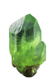
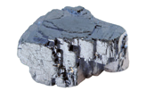
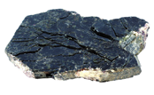
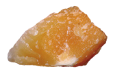
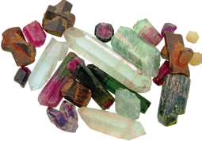

Identificación de minerales según sus propiedades
Los minerales se identifican observando directamente sus propiedades o realizando ensayos sencillos. Algunas pruebas que permiten comprobar las propiedades de los minerales son las siguientes:
- Brillo: Se limpia la superficie del mineral y se expone a la luz: si resplandece como los metales, tiene brillo metálico.
- Dureza: Se araña su superficie: si se raya con la uña, tiene dureza baja; si no se raya con la uña, pero sí con un objeto de acero, su dureza es media; cuando no se raya con un objeto de acero, su dureza es alta.
- Raya: Se comprueba observando el color de la marca que deja un objeto de acero cuando se araña la superficie del mineral.
- Exfoliación: Si sus superficies de rotura son planas, se dice que el mineral tiene exfoliación.
Esta sencilla guía te ayudará a reconocer los principales minerales.
Materiales
- Una colección de minerales que incluya cuarzo, ortosa, mica, olivino, calcita, pirita y galena.
- Un objeto de acero.
Clasificación de minerales
Cristales planos o terminados en punta
- Color oliva: Olivino
- Transparente o de colores claros
- Color negro: Biotita
Cristales con todas las caras cuadradas o rombicas
- Brillo metálico
- Raya blanca: Calcita
- Dureza media o baja: Galena
- Dureza alta: Pirita
Importante: Debes realizar esta experiencia bajo la supervisión del docente.
Actividad
1. Observa las propiedades de estos minerales e identifícalos con ayuda de la guía.




